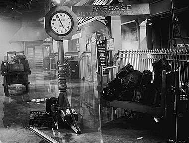
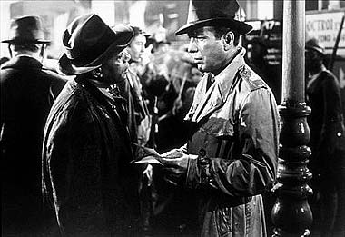
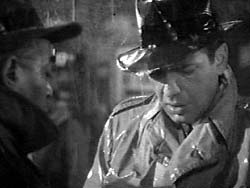
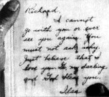

|

Texto de
Susana
Lopes de Alexandria
Ttulo
foi tirado de "Casablanca" (4)

|
 Horas mais tarde, o trem est para partir, e Ilsa ainda no apareceu. Est chovendo.  Sam chega estao e Rick pergunta se ele viu Ilsa. Sam diz que no, mas que Ilsa havia deixado um bilhete para Rick no bar, antes mesmo de ir para o hotel.  Rick pega o bilhete e o l sob a chuva.  As palavras vo se diluindo ao contato com a gua. O bilhete diz: "Richard, no posso ir com voc nem v-lo de novo. No pergunte por qu. Apenas acredite que eu o amo. V, meu querido, e Deus o abenoe. Ilsa". |